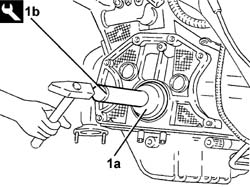

1020D39 Flywheel side OIL SEAL - Replace for versions with automatic transmission
- Path
- Procedures > 10 ENGINE > 1020 CRANKCASE SUMP AND COVERS > 1020D OIL SEALS ON CRANKSHAFT > 1020D39 Flywheel side OIL SEAL - Replace for versions with automatic transmission
- Kind
- repair procedure (removal / refitting; the operation number is the code)
- Applies to
- engines: 3.0 V6, 3.2 V6; all production periods
- Interactive page
- https://sloeber94.github.io/elrnDB-lThss/en/#/184794
Applies to: engines: 3.0 V6, 3.2 V6; all production periods
 Removing
Removing
 Refitting
Refitting- Position the vehicle on a lift.
- Open the boot, remove the cover on the left hand side and disconnect the negative battery lead.
See in Op. 4450B04 Right FRONT WHEEL (one) - R.R.
See in Op. 4450B02 Left FRONT WHEEL (one) - R.R.
- Raise the vehicle on the lift.
See in Op. 7055B54 PROTECTION/GUARD under engine - R.R.
See in Op. 7055B64 Engine compartment DUST SEAL in front wheel arch (one), left or right - R.R.
- < R1 > Left and right sides
See in Op. 7055B42 FRONT WHEEL ARCH LINER (one), left or right - R.R.
- < R1 > Left and right sides
See in Op. 7040D50 ENGINE COMPARTMENT UPPER SOUND INSULATION SHIELD - R.R.
See in Op. 1088B10 Engine coolant SUPPLY RESERVOIR - R.R.
See in Op. 1008C10 Power unit REACTION ROD - Replace
See in Op. 1048A21 AIR INLET HOSE FROM INTAKE TO FILTER - R.R.
See in Op. 1048A28 vacuum air circuit resonator pipe - r+r
See in Op. 1016A42 LEFT CYLINDER HEAD IGNITION COIL COVER - R.R.
See in Op. 1048A11 COMPLETE AIR FILTER -R.R.
See in Op. 1088E10 Radiator cooling FAN - R.R.
See in Op. 5040A10 Air conditioning coolant circuit - Drying and Repressurizing
See in Op. 5050B32 Front windscreen WIPER ARM/S - R.R.
See in Op. 7055A18 Winsdcreen base TRIM - R.R.
See in Op. 1024B20 ENGINE FLYWHEEL - R and R for versions with automatic transmission
- Release and remove the flywheel side oil seal.
Applies to: engines: 3.0 V6, 3.2 V6; all production periods
Refitting
Removing1. Fit a new flywheel side oil seal (1a) using the tool (1b).
 | Description | Code | Function |
|---|---|---|---|
1b | Fitting tool | 1.870.896.200 | Tool for fitting crankshaft rear oil seal |

Applies to: engines: 3.0 V6, 3.2 V6; all production periods
See in Op. 1024B20 ENGINE FLYWHEEL - R and R for versions with automatic transmission
See in Op. 7055A18 Winsdcreen base TRIM - R.R.
See in Op. 5050B32 Front windscreen WIPER ARM/S - R.R.
See in Op. 5040A10 Air conditioning coolant circuit - Drying and Repressurizing
See in Op. 1088E10 Radiator cooling FAN - R.R.
See in Op. 1048A11 COMPLETE AIR FILTER -R.R.
See in Op. 1016A42 LEFT CYLINDER HEAD IGNITION COIL COVER - R.R.
See in Op. 1048A28 vacuum air circuit resonator pipe - r+r
See in Op. 1048A21 AIR INLET HOSE FROM INTAKE TO FILTER - R.R.
See in Op. 1008C10 Power unit REACTION ROD - Replace
See in Op. 1088B10 Engine coolant SUPPLY RESERVOIR - R.R.
See in Op. 7040D50 ENGINE COMPARTMENT UPPER SOUND INSULATION SHIELD - R.R.
See in Op. 7055B42 FRONT WHEEL ARCH LINER (one), left or right - R.R.
- < R1 > Left and right sides
See in Op. 7055B64 Engine compartment DUST SEAL in front wheel arch (one), left or right - R.R.
- < R1 > Left and right sides
See in Op. 7055B54 PROTECTION/GUARD under engine - R.R.
- Lower the vehicle on the lift.
See in Op. 4450B02 Left FRONT WHEEL (one) - R.R.
See in Op. 4450B04 Right FRONT WHEEL (one) - R.R.
- Connect the negative battery lead, then close the boot.
- Remove the vehicle from the lift.
See in Op. 0010T10 ENGINE OIL - Change
See in Op. 0010T70 POWER ASSISTED STEERING FLUID - Replace
-
See in Op. 0010T21 ENGINE COOLANT - Check density and top up if necessary
-
Topics linked from this page (22)
- 0010T10 ENGINE OIL - Change
- 0010T21 ENGINE COOLANT - Check density and top up if necessary
- 0010T70 POWER ASSISTED STEERING FLUID - Replace
- 1004B17 POWER UNIT with automatic transmission, complete with support frame, front suspension- R.R. for versions with air conditioning
- 1004D13 POWER UNIT (automatic transmission) with support frame assembly, front suspension removed - Separation and reassembly
- 1008C10 Power unit REACTION ROD - Replace
- 1016A42 LEFT CYLINDER HEAD IGNITION COIL COVER - R.R.
- 1024B20 ENGINE FLYWHEEL - R&R for versions with automatic transmission
- 1048A11 COMPLETE AIR FILTER -R.R.
- 1048A21 AIR INLET HOSE FROM INTAKE TO FILTER - R.R.
- 1048A28 vacuum air circuit resonator pipe - r+r
- 1088B10 Engine coolant SUPPLY RESERVOIR - R.R.
- 1088E10 Radiator cooling FAN - R.R.
- 4450B02 Left FRONT WHEEL (one) - R.R.
- 4450B04 Right FRONT WHEEL (one) - R.R.
- 5040A10 Air conditioning coolant circuit - Drying and Repressurizing
- 5050B32 Front windscreen WIPER ARM/S - R.R.
- 7040D50 ENGINE COMPARTMENT UPPER SOUND INSULATION SHIELD - R.R.
- 7055A18 Winsdcreen base TRIM - R.R.
- 7055B42 FRONT WHEEL ARCH LINER (one), left or right - R.R.
- 7055B54 PROTECTION/GUARD under engine - R.R.
- 7055B64 Engine compartment DUST SEAL in front wheel arch (one), left or right - R.R.